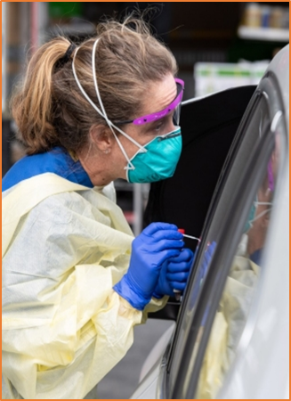

Coronavirus Research Testing @ PKY!
If you would like your child to be tested for free for coronavirus (COVID-19) using a UF developed Research Test, s/he may be eligible to participate in a research study.
Determination of risk factors and care for COVID19 infection

The study is being done to determine if your child has been infected with a newly-identified coronavirus, called COVID-19, or another pathogenic microorganism, and to obtain more information about what clinical symptoms it can cause, if any, and how your child may have become infected. The study is also seeking to understand how families are coping with the stress of the current outbreak. This study is important to provide evidence to local and national decision-makers on how to protect and support communities, and to determine when and how to safely re- open schools.
What to expect?
If you take part in the study, we will collect information from you in an online survey. You will come with your child to PK Yonge’s campus where a medical professional will check your child’s temperature, collect one or two swab samples from his/her nose or throat to test for the virus, and take a finger stick blood sample, if you agree to do so. Negative test results will be conveyed to you by email. Positive test results will be conveyed to you by phone. Students who test positive will be asked to return for additional testing, until both stool samples and nasal/throat swab samples are negative three times in row.
When and where?
- Starting Saturday, April 18
- PK Yonge Campus, Front Circle
- Specific instructions will follow registration
Is your child eligible?
- Child currently attends PK Yonge
Contact Us:
Eva Gonzalez (School Nurse)
nurse@pky.ufl.edu
Dr. Eric Nelson
352-294-8536
Frequently Asked Questions
FAQ
The following survey may take between 20-30 minutes. All of your responses and participation will be completely confidential.